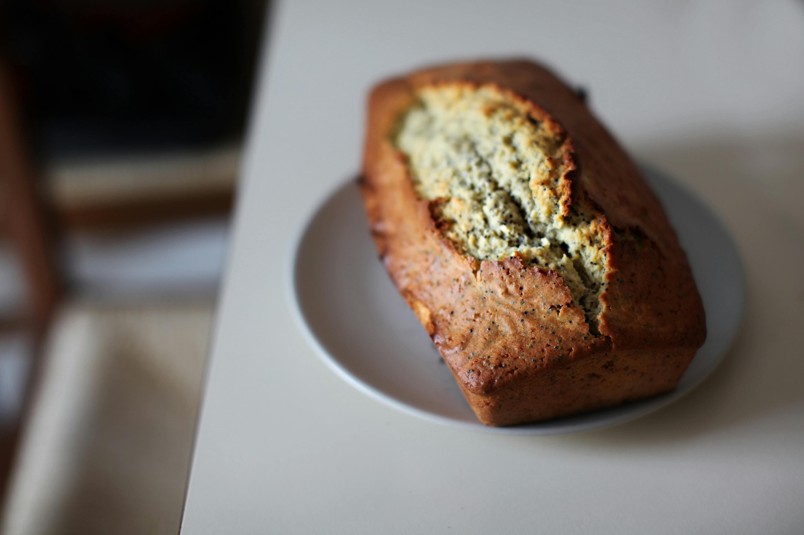

Home
Banana Bread

Description
This is some tasty banana bread! Great way to use those outdated bananas!
Ingredients
- Flour
- Baking soda
- Salt
- Butter
- Brown sugar
- Eggs
- Bananas
Steps
- Preheat oven to 350 degrees F (175 degrees C) and lightly grease a 9x5-inch loaf pan.
- Combine flour, baking soda, and salt in a large bowl. Beat brown sugar and butter with a mixer in a separate large bowl until smooth. Stir in the eggs and mashed bananas until well blended. Stir the banana mixture into flour mixture until it has just combined.
- Pour batter into the prepared loaf pan.
- Bake in the preheated oven until a toothpick that's inserted into the center come sout clean (takes about 60 minutes)
- Let the bread cool in the pan for 10 minutes, then turn it onto a wire rack to cool completely.